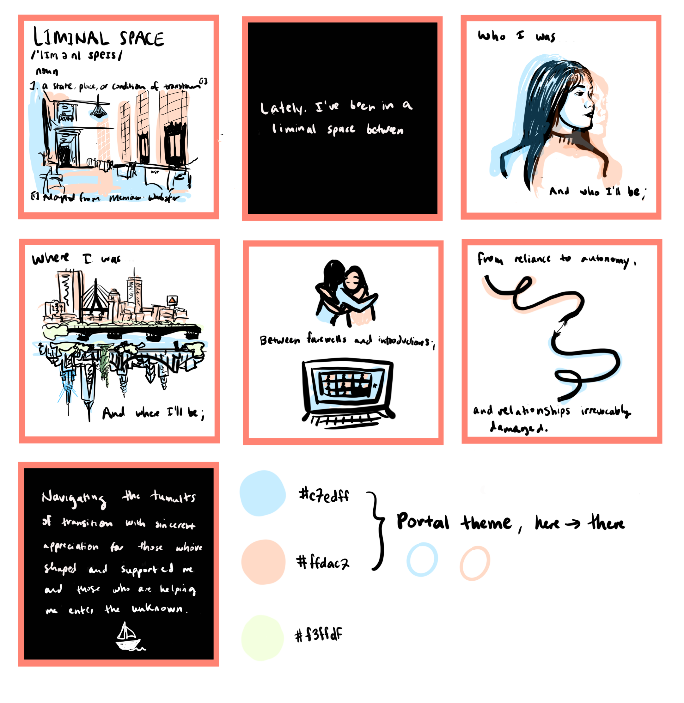

I thought the weeks in between submitting my master's thesis and beginning full-time work in NYC would offer some peaceful respite and time to reflect...
On Friday night, I turned in my thesis, and on Saturday morning, I was virtually touring potential apartments with my future roommate. The hectic but mundane whirlwind of life events-- apartment hunting (read the fine print!); an involved team-matching process for my job; and cramming as many goodbye lunches/dinners with friends at school-- was itself a full-time job. Although perfectly manageable, it left no space to breathe and relax. Fortunately, I didn't feel awfully sentimental because this entire year was a slow burn goodbye to MIT, and I already got to spend longer than I had anticipated at school and with dear friends; it was about time to graduate and move on.
Then things got worse. Difficult family circumstances (too personal to disclose) arose which caused me to worry about my moving and housing logistics, on top of being emotionally distressed to the point of affecting my physical health. Once my situation became a little more stable, owing to the generosity of my friends and support system at school, I began to draw, because "drawing is free therapy," as someone wrote on the wall of my floor kitchen. And it is. I spent two days feverishly drawing Liminal Space, finding comfort and satisfaction in the familiar lines, colors, and shapes. I wanted to turn the ugliness and chaos of my personal life into something beautiful and orderly, and I didn't want to think about anything else. I kept the art intentionally general, afraid to expose anything private, disturbing, or vindictive. I hardly allude to the root cause of my distress and focus instead on the generic uncertainty of post-college transition.
And I think the generality of Liminal Space allowed it to strike a chord with surprisingly many people, with even acquaintances and strangers leaving comments online. I couldn't care less how my art fares on social media, but I'm glad that something born from such a terrible experience could bring others joy or comfort.
 Concept storyboard for Liminal Space